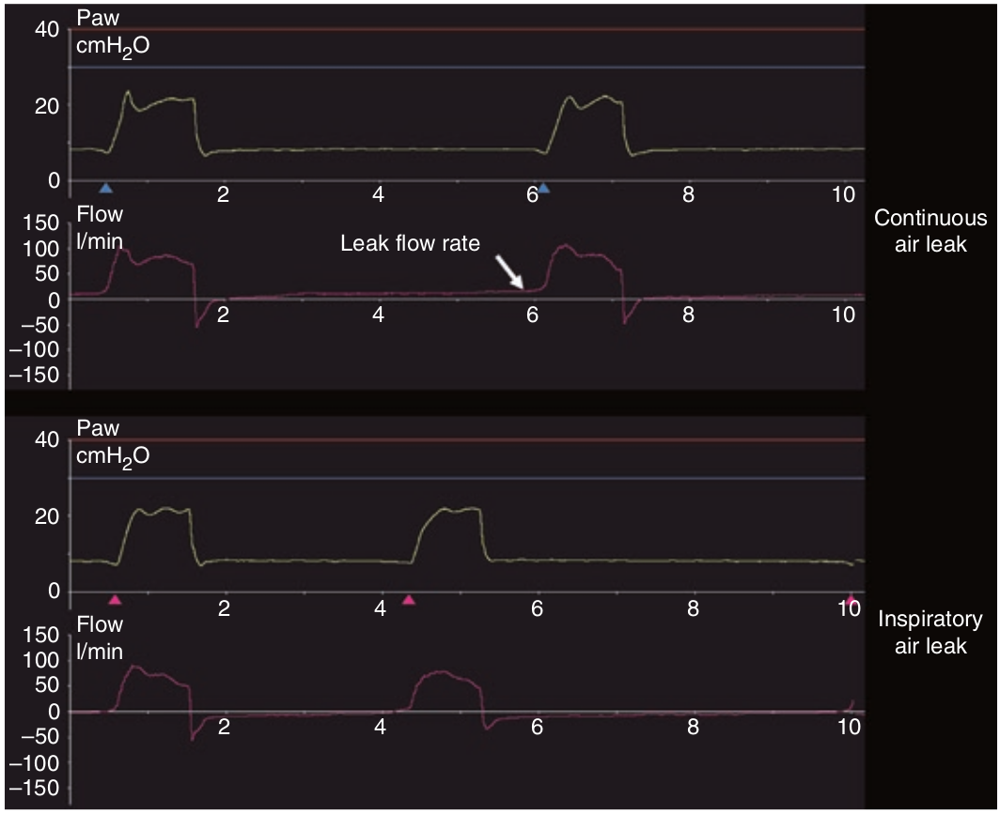

وقتی که ترایگر شدت جریانی برای دم بکار میرود، اگر علاوه بر متفاوت بودن سطح زیر منحنی شدت جریان بین دم و بازدم، در پایان بازدم (قبل از ترایگر دمی)، شدت جریان بالاتر از خط پایه (مثبت) باشد، ما به وجود یک نشت مداوم مشکوک می شویم. سپس می توان مقدار نشت را به ازای یک مقدار خاص PEEP بدست آورد. در نشت مداوم، میزان نشت با افزایش فشار افزایش می یابد. اما اگر فقط سطح زیر منحنی شدت جریان، بین دم و بازدم تفاوت داشت ولی شدت جریان در پایان بازدم صفر بود، این پدیده علامت این است که نشت مداوم نیست و اساسا هنگام هواگیری ریه روی میدهد.

در مورد وجود و نوع نشت کدام یک صحیح است؟
۱ - وجود شدت جریان مثبت در پایان بازدم علامت نشت مداوم است
۲ - وجود یک شدت جریان منفی در پایان بازدم علامت فقدان نشت تصادفی است
۳ - قرار داشتن منحنی شدت جریان بر روی خط پایه در پایان بازدم نشانه نشت مداوم است
۴ - قرار داشتن منحنی شدت جریان بر روی خط پایه در پایان بازدم نشانه نشت منقطع است
۵ - در صورت وجود نشت تصادفی از ماسک تهویه غیرتهاجمی، فشار بازدمی کمتر از PEEP خواهد بود